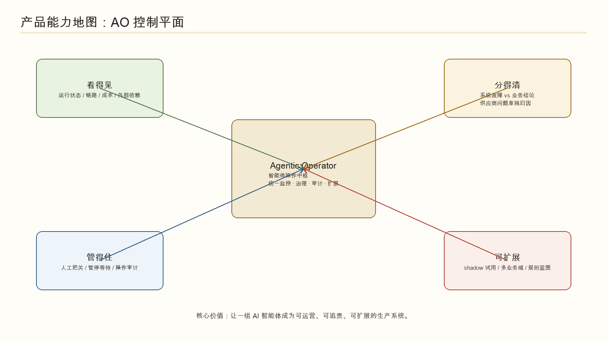
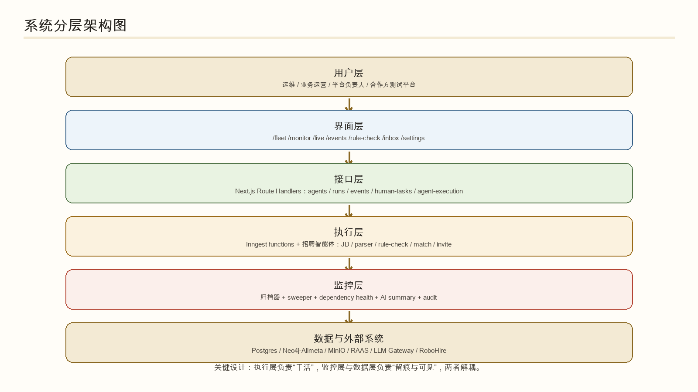
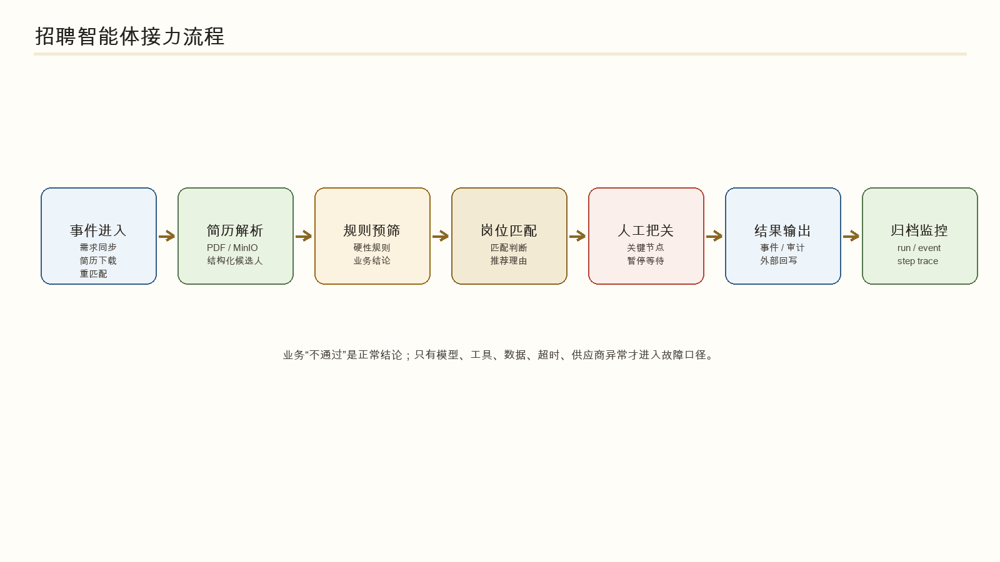
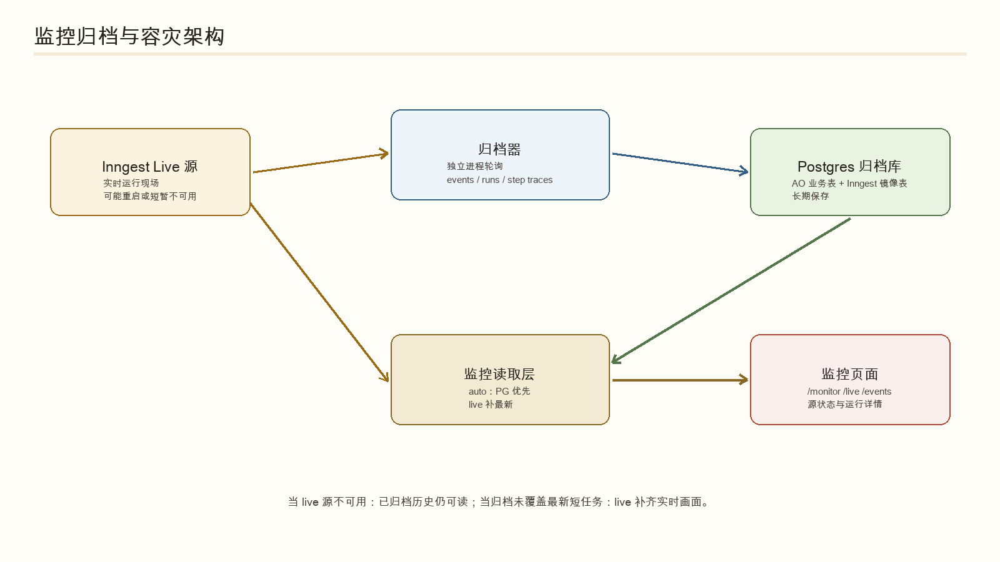
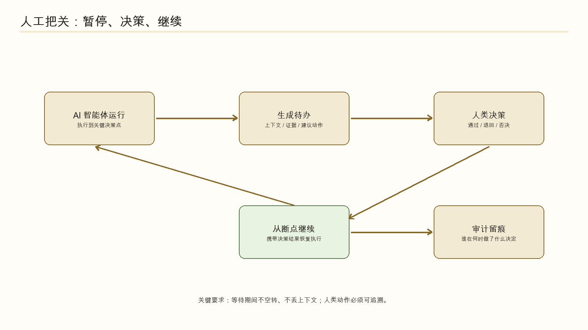
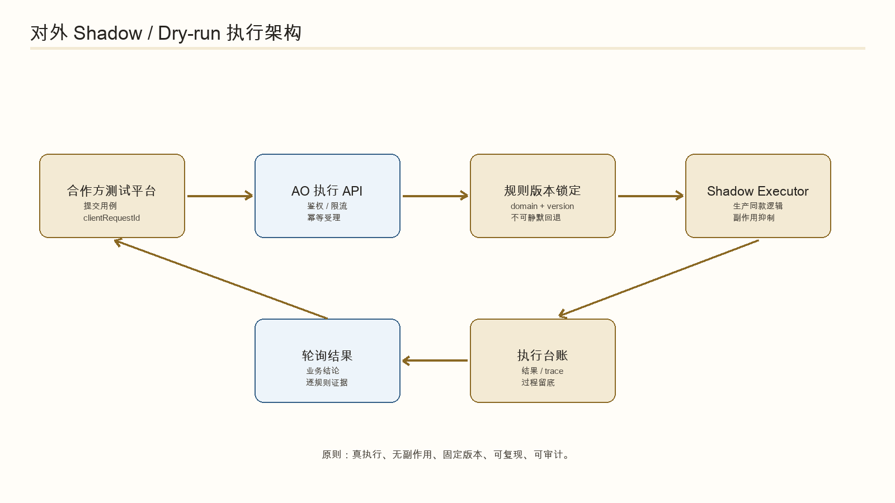

Agentic Operator 产品需求文档（PRD）
AI 智能体操作中枢：把招聘智能体从“能跑”推进到“看得见、管得住、可追责、可扩展”。
1. 一页摘要
AO 不是给候选人或普通 HR 使用的招聘系统，而是给“负责 AI 智能体稳定运行的人”使用的控制平面。它把一次招聘流程中的智能体、事件、运行记录、外部依赖、人工待办和审计结果集中管理。
看得见
运行状态、任务链路、错误、超时、成本、供应商健康，统一进入监控视图。
分得清
把“系统故障”和“业务不通过”分开，避免把宕机误读成候选人淘汰。
管得住
关键节点可暂停等人决策，操作留痕；后续扩展到配置、版本、开关治理。
可外借
通过 shadow / dry-run API 让合作方用固定规则版本测试，不碰生产副作用。
1.1 版本成功标准
| 目标 | 成功标准 | 验收证据 |
|---|---|---|
| 监控不失明 | Inngest live 源不可用时，监控仍能读取已归档 run / event / step trace。 | `MONITOR_READ_SOURCE=postgres` 下 `/api/inngest-admin/*` 返回归档数据。 |
| 失败不误判 | 业务不通过不算系统失败；只有模型、数据、工具、超时等才进入故障口径。 | 运行详情和总结中展示四类状态：成功、重试后成功、系统故障、业务结论。 |
| 外部依赖可见 | 供应商欠费、故障、限流、认证异常不混进智能体自身质量分。 | 依赖健康卡片、通知和运行详情中能定位供应商、影响范围、建议动作。 |
| 人工把关可追责 | 关键决策可生成待办、暂停等待、收到人类决策后继续，并留下审计记录。 | `/inbox`、`/api/human-tasks`、相关 run trace 可关联同一任务。 |
| 合作方安全试用 | 外部请求可用固定规则版本进行 shadow 执行；幂等、鉴权、限流、无生产副作用。 | `/api/agent-execution/capabilities` 与 `/executions` 可跑通单条 matchResume。 |
2. 用户与场景
本产品的主用户不是招聘候选人，也不是普通招聘业务系统用户，而是运营 AI 智能体的人。PRD 后续所有需求都围绕这些用户的日常问题展开。
| 角色 | 核心问题 | 需要 AO 提供什么 | 主要入口 |
|---|---|---|---|
| 值班运维 / 平台工程师 | 半夜报警时，到底是系统坏了、供应商坏了，还是业务本来不通过？ | 监控总览、运行详情、错误归因、供应商健康、归档兜底。 | `/monitor`、`/fleet`、`/alerts`、`/events` |
| 业务运营 / 交付经理 | AI 的判断能不能信？哪些任务需要人拍板？候选人为什么停在这里？ | 人工待办、规则校验详情、事实核查、候选人链路、追查助手。 | `/inbox`、`/rule-check`、`/live`、`/correlations` |
| 平台负责人 | 版本、成本、供应商风险、对外试用和新业务复制是否可控？ | 版本口径、用量台账、依赖状态、shadow API、扩展蓝图。 | `/analytics`、`/settings`、`/agent-execution/*`、`/workflow-agents` |
| 外部合作方 / 测试平台 | 能不能用固定规则版本跑回归测试，且不影响正式招聘流程？ | 鉴权 API、幂等执行、轮询结果、逐规则过程数据、无副作用声明。 | `/api/agent-execution/*` |
2.1 典型用户故事
- 作为值班运维，我要在 1 分钟内判断一次失败是系统故障、供应商故障还是正常业务不通过。
- 作为业务运营，我要看到 AI 为什么判定候选人不匹配，并知道是否需要人工复核。
- 作为平台负责人，我要知道每个智能体最近的成本、错误率、外部依赖风险和版本状态。
- 作为合作方测试平台，我要用指定规则版本重复跑同一批用例，结果可复现且不污染生产。
3. 范围与成熟度
3.1 本版范围
必须做清楚
监控归档、运行追踪、故障归因、依赖健康、人工把关、规则校验审计、对外 shadow 执行。
可以部分交付
追查助手、AI 事实核查、跨业务域监控、新智能体生成、成本分析。
明确不在本版
候选人端产品、完整 ATS 替代、自动修复生产故障、完整多租户权限、正式计费系统。
3.2 成熟度总表
| 能力 | 当前状态 | 数据口径 | 本版承诺 | 备注 |
|---|---|---|---|---|
| Postgres 持久化 + Inngest 归档 | 已可用 | 真实后端 | 是 | 监控读路径支持 PG 优先 / live 回退。 |
| 运行监控与 run 详情 | 已可用 | 真实为主 | 是 | `/monitor`、`/live`、`/api/inngest-admin/*`。 |
| 系统故障 vs 业务结论分类 | 已可用 | 真实后端 | 是 | 业务 not_matched 不算 failed。 |
| 供应商 / 依赖健康 | 已可用 | 真实 + 聚合 | 是 | 欠费、故障、说不准需分档。 |
| 人工待办 / 人类决策 | 部分可用 | 真实后端，UI 持续完善 | 部分 | 已支持暂停等待与决策回写；批量治理、权限仍需补。 |
| 规则校验审计 | 部分可用 | 真实后端 | 部分 | 招聘域优先；跨域覆盖和人工校准待补。 |
| AI 事实核查 / 多模型评审 | 部分可用 | 真实流程 + 待校准 | 部分 | 主流程可跑；人工标准答案和漂移监控未完整闭环。 |
| 对外 shadow 执行 API | 第一版可用 | 真实 API | 是 | 当前支持 matchResume，候选人 ref 优先，inline candidate 待开放。 |
| 追查助手 Chatbot | 原型/部分可用 | 真实 trace + 工具查询 | 部分 | 需要明确可查询范围、证据展示和“不知道”策略。 |
| 新业务 / 新智能体生成 | 规划中 | 蓝图 + 局部工具 | 否 | 招聘最成熟，能源/费控以监控和触发为主。 |
| 远程配置、暂停、恢复、上线治理 | 规划中/开发中 | 接入中 | 否 | 当前不可对外承诺完整“管控台”。 |
4. 核心流程与架构图
4.1 产品能力地图

4.2 系统分层架构图

4.3 招聘智能体执行流程

4.4 监控归档与容灾架构

4.5 人工把关流程

4.6 对外 shadow 执行架构

5. 功能需求
R1. 智能体舰队总览
部分可用目标：让用户按业务域看到有哪些智能体、是否健康、最近是否异常、依赖是否正常。
- 支持按业务域筛选：招聘、能源、费控等；招聘域为当前主交付域。
- 每个智能体显示状态、最近运行、错误率、耗时、用量、需关注原因。
- 点击智能体进入详情：运行历史、配置摘要、依赖、最近实体、相关告警。
- 页面或交付说明必须标明数据接入状态，避免把尚未接入的能力描述成实时监控。
R2. 运行监控与归档兜底
已可用目标：即使运行引擎临时不可用，也能看到已发生的 run / event / step trace。
- 默认读取策略为 `MONITOR_READ_SOURCE=auto`：Postgres 优先，live 补充。
- 支持 `postgres` 和 `live` 强制模式，用于离线排障和实时调试。
- 归档器独立于 Next.js 和 Inngest 调度器运行，失败时记录 cursor 和 lastError。
- 短任务允许存在最多约半分钟归档延迟，UI 应避免把延迟误报成数据丢失。
R3. Run 详情与故障归因
已可用目标：单次任务失败后，用户能快速判断原因、影响和下一步动作。
- 展示 run 基本信息：状态、触发事件、开始/结束时间、耗时、关联实体、函数名。
- 展示 step trace：每步输入、输出、错误、重试、耗时、被抑制副作用。
- 失败分类至少包括：系统故障、外部依赖故障、业务不通过、等待人工、已重试成功。
- AI 自动总结必须遵守分类，不得把系统故障写成候选人不通过。
R4. 供应商与基础设施健康
已可用目标：把外部服务问题从智能体质量问题中分离出来。
- 供应商状态分为：正常、欠费/额度不足、故障/超时、说不准/需人工核查。
- 每个异常状态应显示供应商、业务域、首次出现时间、最近出现时间、影响任务。
- 可恢复故障进入挂起/重试策略；不可恢复故障才记为最终失败。
- 供应商统计读取失败时，页面局部降级，不应拖垮总览页。
R5. 人工待办与人类决策
部分可用目标：让 AI 在关键决策点暂停，等待人类明确给出通过、退回、否决或补充信息。
- 关键 step 触发待办，任务进入 `/inbox`，并关联 runId / traceId / entityId。
- 待办应展示上下文、AI 建议、证据、风险、截止时间、可选动作。
- 人类决策写入审计表，智能体从断点继续。
- 超时未处理时，任务按配置进入取消、升级或继续等待，不允许静默丢失。
R6. 规则校验审计与事实核查
部分可用目标：让业务运营知道 AI 的判断是否有证据，规则是否被正确执行。
- 规则校验展示逐规则结果：规则 ID、规则文本快照、证据、解释、结论、否决原因。
- 业务结论支持 matched、not_matched、needs_review；not_matched 是成功业务结论。
- 事实核查可抽查 AI 输出，并用不同模型或多模型投票给出风险提示。
- 事实核查只提示，不自动改写原业务结论；核查失败不应破坏原流程。
R7. 对外 shadow 执行 API
第一版可用目标：外部测试平台可提交单条用例，用生产同款 agent 做无副作用执行。
- 提供 capabilities 接口，返回支持场景、业务域、规则版本、agent 版本、限制和备注。
- 执行接口支持 API Key、clientRequestId 幂等、并发限制、固定规则版本。
- shadow 模式中禁止发消息、写客户系统、触发正式业务事件；响应中要声明被抑制的副作用。
- MVP 支持 matchResume；inline candidate、复杂 stepIds、正式计费口径后续开放。
R8. 追查助手 Chatbot
原型/部分可用目标：用户可以用自然语言追问“这次为什么失败”“谁卡住了”“证据在哪里”。
- 追查助手只能基于可查询数据回答，并附带证据来源：run、step、event、audit、rule。
- 当数据缺失或无法判断时，必须回答“不确定”，并说明缺哪类数据。
- 不得替用户执行有副作用动作；如需暂停、重试、通知，必须跳转到明确操作入口。
- 支持单 run 追查和全局追查两个形态，权限和可见数据范围后续补齐。
R9. 多业务域与新智能体扩展
规划中目标：让招聘域沉淀出的监控、人工把关、故障归因、shadow 执行能力可以复制到能源、费控等业务域。
- 业务域需要有统一描述：事件、agent、规则蓝图、外部依赖、人工节点、验收用例。
- 新业务接入前必须标注哪些能力复用、哪些能力缺失、哪些页面尚未完成接入。
- 新智能体生成不在本版承诺范围；本版只定义扩展所需的产品口径。
R10. 设置、权限与治理
规划中/开发中目标：把配置、版本、开关、密钥、审计和权限集中管理。
- 系统配置页展示 Inngest、Postgres、Allmeta/Neo4j、RAAS、MinIO、LLM gateway 当前连接状态。
- 敏感配置只展示摘要和健康状态，不展示密钥原文。
- 后续需要支持角色权限：只读、运营处理、平台管理员、外部 API 调用方。
- 所有高风险动作必须二次确认并写入审计。
6. 验收口径
每个功能交付时，不只看页面是否存在，还要看数据是否真实、异常是否可解释、用户是否知道下一步怎么做。
| 模块 | P0 验收 | P1 验收 |
|---|---|---|
| 监控归档 | 归档表有 events/runs/steps；Inngest 停止时 PG 模式仍能读历史。 | UI 展示数据源状态和最近同步时间。 |
| Run 详情 | 失败 step、错误、重试、业务结论能分开展示。 | AI 总结附证据，不确定时明确说不确定。 |
| 供应商健康 | 欠费/故障/说不准三类能进入卡片或通知。 | 能按供应商、业务域、影响 run 过滤。 |
| 人工待办 | 任务可创建、可处理、可回写、可审计。 | 支持升级、超时策略和批量处理。 |
| 规则审计 | 单条规则校验可追到规则 ID、证据、结论。 | 可对比人工标准答案并形成质量趋势。 |
| Shadow API | capabilities、POST、GET 轮询、幂等、鉴权、限流跑通。 | 支持更多输入形态、细分理由、计费口径。 |
| 追查助手 | 能回答单 run 的失败原因并附来源。 | 支持跨事件因果链、多数据源检索和权限收敛。 |
7. 数据口径
7.1 关键术语
| 术语 | 定义 | 使用规则 |
|---|---|---|
| 智能体 / AI 员工 | 负责一个或多个业务步骤的 agent，例如简历解析、规则校验、岗位匹配、邀约。 | 面向外部可用“AI 员工”做解释，PRD 和验收中统一称“智能体”。 |
| 运行引擎 | 承载事件、函数、step 的执行系统，当前主要是 Inngest。 | 它是 live 源，不是唯一历史源。 |
| 归档数据库 | Postgres 中的 AO 业务表和 Inngest 镜像表。 | 监控默认优先读取归档，避免 live 源不可用时失明。 |
| 业务结论 | 业务规则自然给出的结果，如 matched、not_matched、needs_review。 | 业务 not_matched 不等于系统 failed。 |
| 系统故障 | 模型、工具、网络、数据缺失、超时、供应商异常等导致流程没能正确判断。 | 必须进入故障归因和通知口径。 |
| Shadow / Dry-run | 执行真实判断逻辑，但抑制生产副作用的测试模式。 | 对外 API 当前只承诺 shadow。 |
7.2 页面数据源要求
| 页面 / 接口 | 主要数据源 | 要求 |
|---|---|---|
| `/fleet` | `/api/agents`、依赖健康、最近活动 | 标注哪些字段已接入后端，哪些仍处于接入中。 |
| `/monitor` | Postgres archive + Inngest live | 展示源状态、同步延迟和空状态原因。 |
| `/live` / run 详情 | run、step、trace、summary、audit | 错误、业务结论、人工待办分开展示。 |
| `/rule-check` | rule-check audits、Neo4j 规则、本体版本 | 逐规则证据与结论必须可追溯。 |
| `/inbox` | HumanTask、消息、审计 | 人类动作必须落审计。 |
| `/api/agent-execution/*` | 执行台账、规则引擎、Neo4j、trace | 固定版本、幂等、无副作用声明。 |
8. 非功能需求
可靠性
监控不依赖单一 live 源；归档器幂等；局部数据失败时页面局部降级。
安全
外部 API 必须鉴权；密钥不明文展示；shadow 模式禁止生产副作用。
审计
人工决策、外部执行、关键配置、高风险动作都要有可查询审计记录。
可解释性
AI 总结必须引用证据；缺数据时承认不确定；业务结论和系统故障不能混写。
8.1 性能与限制
- 监控页默认视图应在 3 秒内返回首屏可用信息；大量历史数据使用分页或时间窗口。
- 归档器默认 30 秒轮询，允许短任务存在同步延迟；异常时记录 lastError 而不是静默失败。
- 对外 API 单用例执行目标 ≤ 3 分钟；超过 timeoutMs 后返回 timeout 状态。
- 外部 API 并发限制第一版按全局上限实现，后续改为按调用方、业务域、版本维度限流。
9. 风险与待决策
9.1 待产品决策
| 问题 | 建议决策 | 影响 |
|---|---|---|
| PRD 是否继续叫“通俗版” | 不建议。对外可另做一页纸，PRD 保持需求口径。 | 减少读者误以为这是营销材料。 |
| “AI 员工”是否作为正式术语 | 对外介绍可用，需求和验收统一用“智能体”。 | 避免研发、测试和合作方理解偏差。 |
| 本版是否承诺完整“管得住” | 不承诺。只承诺人工把关与审计；配置/暂停/恢复列为后续。 | 降低交付风险。 |
| 能源/费控是否作为本版主场景 | 不作为主场景，只保留监控和触发能力说明。 | 聚焦招聘域验收。 |
| 外部 API 是否进入正式生产 SLA | 暂不进入；定位为联调和评估 API。 | 避免过早承担正式开放平台责任。 |
10. 可推荐申请专利的方向
以下是产品侧的专利申请候选清单，不等同于法律结论。正式申请前需要做新颖性检索、竞品和论文检索，并由专利代理人把技术方案改写成权利要求。
10.1 优先推荐：发明专利候选
| 优先级 | 候选名称 | 可保护的技术点 | 建议准备材料 |
|---|---|---|---|
| P0 | 一种面向智能体运行监控的归档优先读取与实时回退方法 | live 运行源、独立归档器、Postgres 镜像表、PG 优先/live 回退、短任务延迟补偿的组合机制。 | 归档表结构、读取策略、异常降级流程、对比传统直接读 live 源的效果。 |
| P0 | 一种区分业务结论与系统故障的智能体执行状态归因方法 | 把 not_matched 等业务结论与模型/工具/数据/超时/供应商异常分开，并约束 AI 总结不误报。 | 状态枚举、归因规则、错误样例、业务结论样例、告警抑制效果。 |
| P0 | 一种面向外部测试平台的智能体 shadow 执行与副作用抑制方法 | 固定规则版本、幂等受理、真实计算、生产副作用抑制、轮询结果、独立台账。 | API 协议、幂等键设计、版本锁定策略、副作用抑制清单、审计记录。 |
| P1 | 一种智能体外部依赖健康识别与可恢复任务续跑方法 | 按供应商识别欠费/故障/不确定状态，影响任务挂起，恢复后续跑。 | 供应商错误分类、健康状态聚合、恢复策略、任务续跑时序图。 |
| P1 | 一种人机协同智能体断点等待、决策回注与审计方法 | 关键 step 自动暂停、生成待办、等待人类决策、从断点恢复，并写入审计链路。 | HITL 状态机、待办数据结构、审计字段、恢复执行过程。 |
| P1 | 一种基于多模型交叉评审的智能体输出事实核查方法 | 原模型与评审模型分离，多模型投票，只提示不改写原结论，评审失败不影响主流程。 | 抽样策略、评审提示词、投票记录、人工标准答案校准方案。 |
| P2 | 一种基于业务规则蓝图生成智能体运行配置的方法 | 从业务规则、事件、人工节点和外部依赖生成智能体配置、监控项和验收用例。 | 规则蓝图格式、生成链路、跨招聘/能源/费控复用案例。 |
10.2 可考虑：外观设计或软件著作权
| 方向 | 建议 | 说明 |
|---|---|---|
| 外观设计 | 可考虑保护“智能体舰队控制台”“运行链路追踪页”“监控图谱视图”的成套界面。 | 重点在界面整体/局部视觉设计，而不是业务逻辑本身。 |
| 软件著作权 | 可同步准备 AO 平台软件、归档器、shadow 执行服务等软件著作权登记材料。 | 登记周期通常比发明专利短，适合作为交付和融资材料补充。 |
| 暂不建议作为专利主张 | 单纯“用 AI 做招聘推荐”“普通聊天查询运行记录”“普通仪表盘展示状态”。 | 这些更容易被认为是业务规则或常规展示，除非有明确技术改进。 |